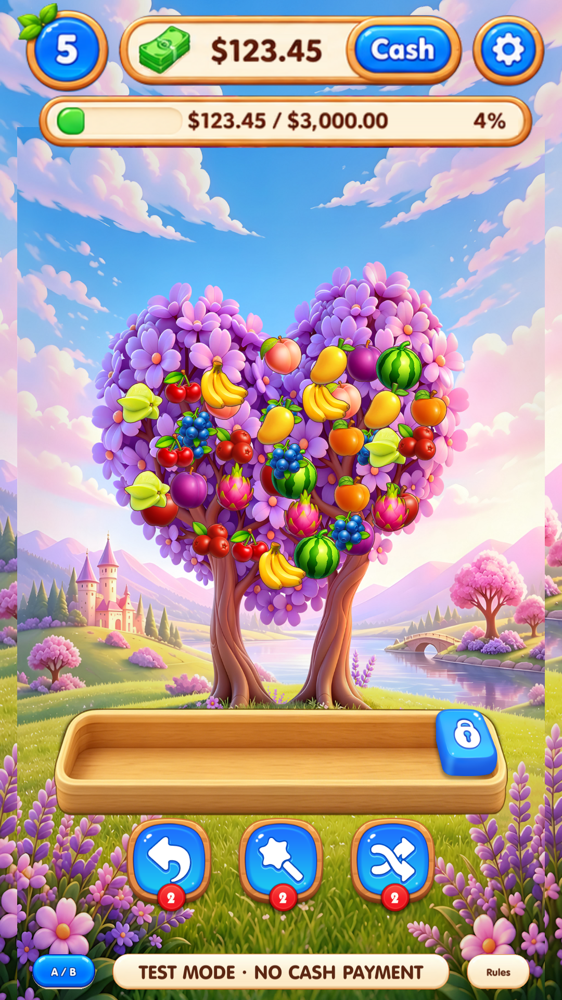
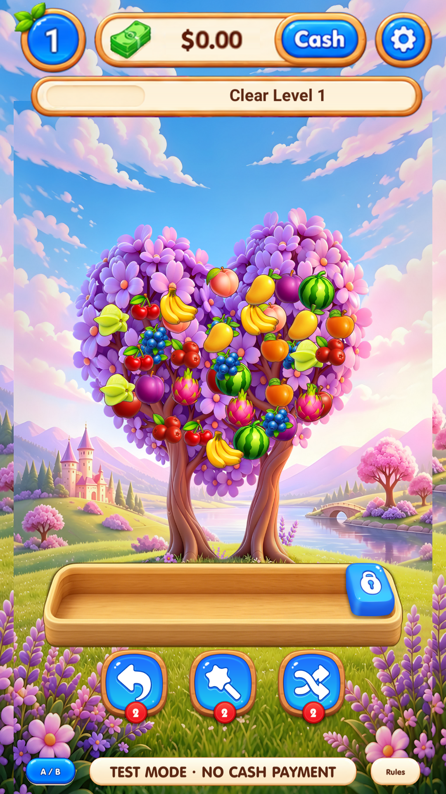
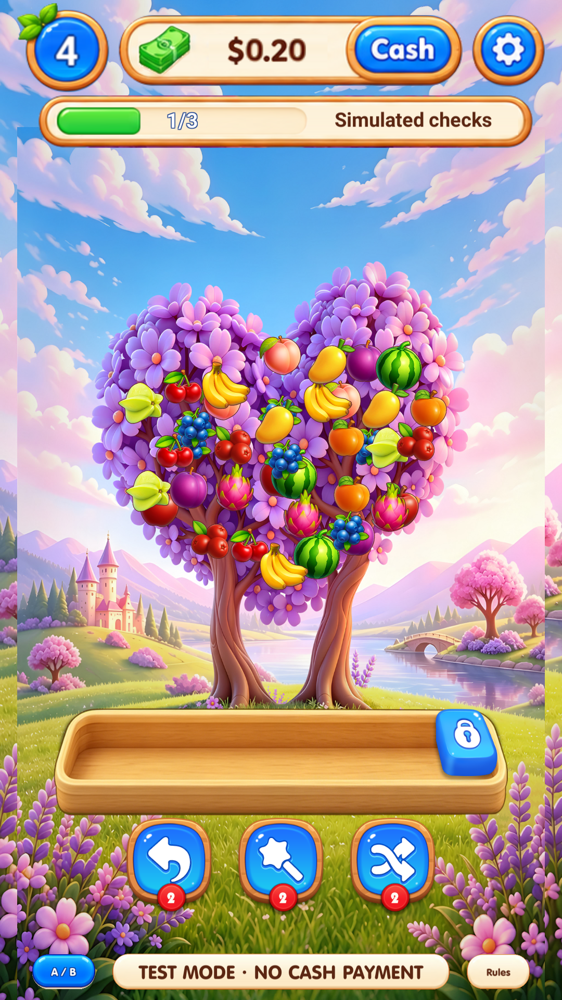
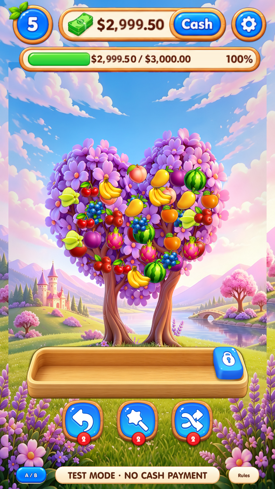

Framework 2 · Actual Unity runtime captures
Actual saved prefab instances in Game.unity. Synthetic QA states; no live advertisement or payment. Offscreen 1080 × 1920, not physical-device or pixel-parity evidence.
01 · GamePlayerView
late cash HUD
stage 5 / level 5 / balance 123.4533 · GamePlayerView
early HUD
QA stage 1 / level 1 / zero balance34 · GamePlayerView
advertisement HUD
QA stage 3 / level 4 / one of three simulated callbacks47 · GamePlayerView
long balance HUD
QA stage 5 / level 5 / source cap 2999.50Not captured in this run
- 2: Outside this focused HUD-only check; see the previous full-page capture suite.
- 3: Outside this focused HUD-only check; see the previous full-page capture suite.
- 4: Outside this focused HUD-only check; see the previous full-page capture suite.
- 5: Outside this focused HUD-only check; see the previous full-page capture suite.
- 6: Outside this focused HUD-only check; see the previous full-page capture suite.
- 7: Outside this focused HUD-only check; see the previous full-page capture suite.
- 8: Outside this focused HUD-only check; see the previous full-page capture suite.
- 9: Outside this focused HUD-only check; see the previous full-page capture suite.
- 10: Outside this focused HUD-only check; see the previous full-page capture suite.
- 11: Outside this focused HUD-only check; see the previous full-page capture suite.
- 12: Outside this focused HUD-only check; see the previous full-page capture suite.
- 13: Outside this focused HUD-only check; see the previous full-page capture suite.
- 14: Outside this focused HUD-only check; see the previous full-page capture suite.
- 15: Outside this focused HUD-only check; see the previous full-page capture suite.
- 16: Outside this focused HUD-only check; see the previous full-page capture suite.
- 17: Outside this focused HUD-only check; see the previous full-page capture suite.
- 18: Outside this focused HUD-only check; see the previous full-page capture suite.
- 19: Outside this focused HUD-only check; see the previous full-page capture suite.
- 20: Outside this focused HUD-only check; see the previous full-page capture suite.
- 21: Outside this focused HUD-only check; see the previous full-page capture suite.
- 22: Outside this focused HUD-only check; see the previous full-page capture suite.
- 23: Outside this focused HUD-only check; see the previous full-page capture suite.
- 24: Outside this focused HUD-only check; see the previous full-page capture suite.
- 25: Outside this focused HUD-only check; see the previous full-page capture suite.
- 26: Outside this focused HUD-only check; see the previous full-page capture suite.
- 27: Outside this focused HUD-only check; see the previous full-page capture suite.
- 28: Outside this focused HUD-only check; see the previous full-page capture suite.
- 29: Outside this focused HUD-only check; see the previous full-page capture suite.
- 30: Outside this focused HUD-only check; see the previous full-page capture suite.
- 31: Outside this focused HUD-only check; see the previous full-page capture suite.
- 32: Outside this focused HUD-only check; see the previous full-page capture suite.
- 35: Outside this focused HUD-only check; see the previous full-page capture suite.
- 36: Outside this focused HUD-only check; see the previous full-page capture suite.
- 37: Outside this focused HUD-only check; see the previous full-page capture suite.
- 38: Outside this focused HUD-only check; see the previous full-page capture suite.
- 39: Outside this focused HUD-only check; see the previous full-page capture suite.
- 40: Outside this focused HUD-only check; see the previous full-page capture suite.
- 41: Outside this focused HUD-only check; see the previous full-page capture suite.
- 42: Outside this focused HUD-only check; see the previous full-page capture suite.
- 43: Outside this focused HUD-only check; see the previous full-page capture suite.
- 44: Outside this focused HUD-only check; see the previous full-page capture suite.
- 45: Outside this focused HUD-only check; see the previous full-page capture suite.
- 46: Outside this focused HUD-only check; see the previous full-page capture suite.
Full manifest, observations and limitations